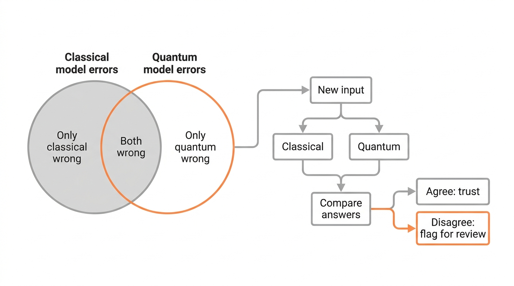

Can Quantum and Classical Models Fail Differently on the Same Data?

In one sentence
Even if a quantum model is no more accurate than a classical one, does it get different examples wrong — and if so, can we describe that difference and use it, for example to catch each other's mistakes?
What is the problem?
Suppose two doctors each read 1,000 X-rays and each misdiagnoses 50. If they miss the same 50, asking for a second opinion is pointless. If they miss completely different ones, then whenever they disagree you know to look closer, and together they are far more reliable than either alone. What matters is not just how often each one is wrong, but where.
Now replace the doctors with two machine-learning models trained on the same data: an ordinary neural network and a quantum model. A quick reminder of what the second one is: it loads the data into qubits — quantum bits that can be in a superposition, a weighted blend of 0 and 1 — transforms them with a circuit of adjustable quantum operations, and then measures them, getting random 0s and 1s whose frequencies give the prediction. Its internal "view" of the data is a quantum state rather than a stack of neuron activations.
Most comparisons between the two stop at a single number: accuracy, or accuracy under attack. This open problem asks the next question: on identical data, do quantum and classical models fail in different ways — and can that difference be characterized, or even exploited?
Why does it matter?
- A new use for quantum models. A quantum model does not have to beat a classical one to be useful. If it is wrong in different places, it can be a valuable second opinion — a claim that is easier to test than outright quantum advantage.
- Safer systems. Disagreement between two very different models is a cheap warning signal: when they disagree, slow down or ask a human.
- Harder attacks. An adversarial example crafted against one kind of model often fools similar models too. If quantum and classical models have different weak spots, an attacker would have to fool both at once.
- Understanding. Knowing which inputs each model finds hard tells us what each kind of model actually learns.
What would a solution look like?
The basic tool is simple: run both models on the same test set and compare their mistakes example by example, not just in total.

A full answer would go beyond counting the overlap. It would describe what kind of inputs fall in each region — for example, "the quantum model struggles with inputs whose values are very large, because its encoding wraps them around," or "the classical model is fooled by tiny high-frequency patterns the quantum model ignores." That description is what turns an observation into understanding.
The key idea: different structure, different blind spots
Every model has inductive biases — built-in preferences for some kinds of patterns over others. A neural network with ReLU activations naturally carves the input into many flat pieces. A quantum model that encodes data as qubit rotations naturally builds its predictions out of smooth, wave-like (periodic) functions of the input. Those are different "vocabularies" for describing a decision boundary.
When two models describe the boundary in different vocabularies, they tend to bend it in different places — and the places where a boundary is bent wrongly are exactly where mistakes happen. That is the hypothesis: different structure should produce different blind spots. But there is a catch. Both models are trained on the same data, and much of what makes an example hard — a blurry image, an ambiguous label — is hard for any model. The interesting part is whatever is left after those shared hard cases are removed.
Why is it hard?
- Same data, same difficulty. Many errors come from the data itself — noise, mislabeled examples, genuinely ambiguous cases — so a large overlap may be unavoidable.
- Is it quantum, or just different? Two classical models with different architectures also make different mistakes. To claim something about quantum models, the comparison has to include classical models with matched structure (see OP-07).
- Small quantum models. Today's quantum models are small and usually work on simplified or compressed data, so differences may reflect that preprocessing rather than the model.
- Randomness. A quantum model's output comes from repeated random measurements, and hardware noise adds more randomness. Some "different mistakes" may just be noise and vanish if the model is run again.
- Describing a difference is hard. Saying the error sets differ is easy; explaining how they differ in human terms is much harder.
What has been tried so far
- Ensembles and diversity in classical ML. It has long been known that combining models helps most when their errors are not correlated, and there are standard ways to measure how much two models disagree.
- Transferability of adversarial examples between different classical architectures — attacks often carry over, but less so between very different model families. Early quantum studies hint that attacks crafted on classical networks carry over only partly to quantum classifiers.
- Accuracy-and-robustness benchmarks comparing quantum and classical classifiers. These usually report totals, not which individual examples each one gets wrong.
- Theory of quantum model structure, showing that common quantum models compute sums of periodic functions of their inputs, which hints at where their biases lie.
- Hybrid quantum–classical models that stack a quantum layer on top of a classical network — but these mix the two rather than comparing their failures.
I have not seen a systematic, example-by-example comparison of quantum and classical failure modes on shared data, with structure-matched baselines and an attempt to describe the differences.
How I would approach it
- Choose a few small datasets where both kinds of model reach similar accuracy, so neither is simply better.
- Train several classical models (different architectures) and several quantum models (different encodings), each with multiple random seeds.
- For every test example, record which models get it wrong. Measure the overlap between quantum and classical errors, and compare it with the overlap between two classical architectures — the honest baseline.
- Repeat with adversarial examples: craft attacks on one model and check how often they fool the other.
- Group the examples that only one family gets wrong and look for a pattern — in feature values, frequency content, or position relative to the boundary.
- Finally, test the payoff: does flagging quantum–classical disagreement catch more errors than flagging classical–classical disagreement?
Questions still open
- Is the error overlap between a quantum and a classical model smaller than between two different classical models?
- If the failure modes differ, can the difference be described in terms of the encoding or the model's natural "vocabulary"?
- Do adversarial examples transfer less between quantum and classical models than within each family? (see OP-08)
- Could disagreement between the two serve as a failure warning before the label is known? (see OP-01)
- Do the differences survive on real, noisy hardware, or only in simulation?
- Is any of this specific to quantum models, or would a carefully designed classical model with the same biases behave the same way? (see OP-07)
This problem closes the quantum × AI trio: OP-07 asks whether quantum robustness is real, OP-08 asks what an attack on a quantum model even means, and this one asks whether quantum and classical models are useful together. The disagreement idea also links to the failure-warning question in OP-01 and to autonomous systems that must know when not to trust themselves (OP-12).
Work on this together
If you build quantum classifiers, study ensembles and model diversity, or work on adversarial transferability, I would love to hear from you — especially if you think the overlap will turn out to be large and want to prove it.
Reach out about OP-09Further reading
- Dietterich — Ensemble Methods in Machine Learning (Multiple Classifier Systems 2000)
- Lakshminarayanan et al. — Simple and Scalable Predictive Uncertainty Estimation using Deep Ensembles (NeurIPS 2017)
- Papernot, McDaniel & Goodfellow — Transferability in Machine Learning: from Phenomena to Black-Box Attacks using Adversarial Samples (arXiv 2016)
- Schuld, Sweke & Meyer — Effect of Data Encoding on the Expressive Power of Variational Quantum Machine Learning Models (Physical Review A 2021)
- Huang et al. — Power of Data in Quantum Machine Learning (Nature Communications 2021)
- West et al. — Towards Quantum Enhanced Adversarial Robustness in Machine Learning (Nature Machine Intelligence 2023)
- Geirhos et al. — Shortcut Learning in Deep Neural Networks (Nature Machine Intelligence 2020)